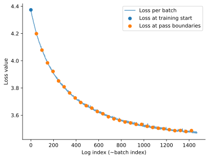
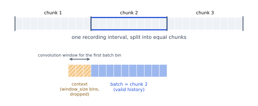
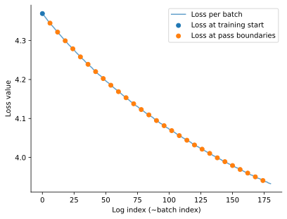

Download
Download this notebook: custom_dataloader.ipynb!
Creating a custom DataLoader#
In the previous section we loaded preprocessed arrays (X and spike_trains) straight into a LazyArrayDataLoader. Here we start one step earlier, from raw spike times on disk, and build the counts and design matrix on the fly inside the loader.
The spikes are loaded and preprocessed with pynapple, which supports lazy, out-of-core loading. The example uses a small simulated dataset, but the same loader scales to large recordings without holding them in memory.
import jax
import matplotlib.pyplot as plt
import numpy as np
import pynapple as nap
import seaborn as sns
from nemos._documentation_utils._stochastic_optim_toy_data import (
DEFAULT_NWB_PATH,
_simulate_and_write_to_disk,
)
from nemos._documentation_utils.plotting import (
plot_batching_schematic,
plot_loss_history,
)
jax.config.update("jax_enable_x64", True)
import nemos as nmo
nap.nap_config.suppress_conversion_warnings = True
np.random.seed(123)
The DataLoader interface#
A DataLoader is any object that streams (X_batch, y_batch) pairs to stochastic_fit. It has to provide three methods:
__iter__: yields(X_batch, y_batch)tuples. It is called once at the start of every pass and must return a fresh iterator each time (usingyieldhere makes the method a generator, which does this automatically).sample_batch: a cheap, deterministic batch used once to initialize the solver state.n_samples: the total number of samples in the dataset.
Anything that provides these three works.
Note
The optimization itself is driven only by __iter__ and sample_batch: stochastic_fit iterates the loader for each pass and draws a single sample_batch to initialize the solver state. n_samples is used after fitting, to estimate the residual degrees of freedom and, from those, the scale parameter that the log-likelihood and pseudo-\(R^2\) scores depend on. This total count cannot be recovered from a single batch, nor – for a loader that never materializes the full design matrix – read off any array’s shape, so the loader has to report it directly. For observation models with a fixed scale (e.g. Poisson, Bernoulli) the scale is a known constant and this count is never used.
A Simple Example: PynappleDataLoader#
As a minimal example, let’s define a simple DataLoader that builds the design matrix for a fully coupled GLM directly from the spike times, using pynapple and a NeMoS basis to:
sample a random 1 s interval and bin the spikes into counts;
pass the counts through a convolutional basis to build the design matrix.
Let’s simulate the spike trains first.
_simulate_and_write_to_disk()
data = nap.load_file(DEFAULT_NWB_PATH)
units = data["units"] # contains spike times per unit
units
Index rate
------- -------
0 38.8078
1 28.0856
2 27.6655
3 28.4857
4 28.8858
5 27.9656
6 28.9658
7 28.1056
8 28.5857
9 38.8278
Now we are ready to set up the data loader.
class PynappleDataLoader(nmo.batching.DataLoader):
def __init__(self, spike_times, basis, batch_size, bin_size):
"""Build design-matrix batches on the fly from spike times.
Parameters
----------
spike_times : pynapple.TsGroup
Spike times, one entry per unit.
basis : nemos.basis.Basis
Convolutional basis used to build the design matrix from binned counts.
batch_size : float
Batch duration, in seconds.
bin_size : float
Bin width for counting spikes, in seconds.
"""
self.spike_times = spike_times
self.basis = basis
self.batch_size = batch_size
self.bin_size = bin_size
self.n_batches_per_epoch = int(
spike_times.time_support.tot_length() // self.batch_size
)
self.rng = np.random.default_rng(seed=123)
self._sample_batch = None
def __iter__(self):
"""
Yield one batch per step for a full pass.
Defining this is what lets `stochastic_fit` loop over the loader
(`for X_batch, y_batch in loader`) one batch at a time.
It is called once at the start of every pass, so it has to begin a
fresh pass over the data each time. Using `yield` here (which turns
the method into a generator) takes care of that automatically.
"""
for i in range(self.n_batches_per_epoch):
yield self._random_batch()
@property
def n_samples(self):
"""Number of samples in the full dataset"""
return int(np.round(self.spike_times.time_support.tot_length() / self.bin_size))
def sample_batch(self):
"""Generate a sample batch at the start of the time support."""
if self._sample_batch is None:
self._sample_batch = self._batch_at_t(self.spike_times.time_support[0, 0])
return self._sample_batch
def _batch_at_t(self, t: float):
"""Generate a batch starting at time t."""
ep = nap.IntervalSet(t, t + self.batch_size)
counts = self.spike_times.restrict(ep).count(self.bin_size)
X = self.basis.compute_features(counts)
return X, counts
def _random_batch(self):
"""Generate a batch at a random time within the time support."""
t = self.rng.uniform(
self.spike_times.time_support[0, 0],
self.spike_times.time_support[0, 1] - self.batch_size,
)
return self._batch_at_t(t)
Note
For best performance (i.e. to avoid unnecessary function recompilations), generate batches that all have the same or at least a limited number of distinct sizes.
Let’s instantiate it and get a batch.
batch_size = 1 # seconds
bin_size = 0.005 # seconds
window_size = int(0.2 / bin_size) # bins
# define a convolutional basis
basis = nmo.basis.RaisedCosineLogConv(5, window_size=window_size)
loader = PynappleDataLoader(units, basis, batch_size, bin_size)
X_batch, y_batch = loader.sample_batch()
print(X_batch)
Time (s) 0 1 2 3 4 ...
-------------------- ------------- ------------ ---------- --------- --------- -----
0.0025 nan nan nan nan nan ...
0.0075 nan nan nan nan nan ...
0.0125 nan nan nan nan nan ...
0.017499999999999998 nan nan nan nan nan ...
0.0225 nan nan nan nan nan ...
0.0275 nan nan nan nan nan ...
0.0325 nan nan nan nan nan ...
... ...
0.9674999999999999 0.302096 0.959167 0.838925 1.1064 4.25361 ...
0.9724999999999999 0.00226186 0.547505 1.05426 1.33596 3.99431 ...
0.9774999999999999 0 0.200843 0.912849 1.50964 3.80898 ...
0.9824999999999999 1.92439e-16 0.0332556 0.679303 1.52162 3.73187 ...
0.9874999999999999 0 1.4803e-16 0.45577 1.41871 3.65134 ...
0.9924999999999999 3.55271e-16 0 0.273075 1.25474 3.53063 ...
0.9974999999999999 1 0.5 0.141021 1.06827 3.36626 ...
dtype: float64, shape: (200, 50)
NaN padding
The first window_size rows of the design matrix are NaNs. This is NeMoS default convolution behavior: the convolution is run in mode "valid" to avoid border artifact and then NaN padded to preserve the original time axis length. NeMoS GLM.stochastic_fit will filter out the NaNs, so the effective batch size will be 160 = 200 - window_size.
Set up logging and run the optimization#
We again use the preprocessed full dataset as the test set, but in practice this would be a smaller held-out dataset.
batch_logger = nmo.callbacks.TestLossLogger(
data["X"],
data["spike_trains"],
events={"train_begin", "batch_end"},
)
Fit for 30 passes:
glm = nmo.glm.PopulationGLM(
solver_name="GradientDescent",
regularizer="Ridge",
regularizer_strength=0.01,
solver_kwargs={"stepsize": 0.05, "acceleration": False},
)
glm.stochastic_fit(loader, n_passes=30, callbacks=batch_logger)
PopulationGLM(
observation_model=PoissonObservations(),
inverse_link_function=exp,
regularizer=Ridge(),
regularizer_strength=0.01,
fit_intercept=True,
solver_name='GradientDescent',
solver_kwargs={'stepsize': 0.05, 'acceleration': False}
)In a Jupyter environment, please rerun this cell to show the HTML representation or trust the notebook. On GitHub, the HTML representation is unable to render, please try loading this page with nbviewer.org.
Parameters
| observation_model | PoissonObservations() | |
| inverse_link_function | <function exp...x7f9fd4155e40> | |
| regularizer | Ridge() | |
| regularizer_strength | 0.01 | |
| fix_params | (None, ...) | |
| solver_name | 'GradientDescent' | |
| solver_kwargs | {'acceleration': False, 'stepsize': 0.05} | |
| fit_intercept | True | |
| feature_mask | None |
Fitted attributes
| Name | Type | Value |
|---|---|---|
| aux_ | NoneType | None |
| coef_ | ArrayImpl[float64](50, 10) | Array([[-9.74...dtype=float64) |
| dof_resid_ | NoneType | None |
| intercept_ | ArrayImpl[float64](10,) | Array([-1.484...dtype=float64) |
| scale_ | ArrayImpl[float64](10,) | Array([1., 1....dtype=float64) |
| solver_state_ | OptimistixAdapterState | OptimistixAda...k_bool[] ) ) |
| stochastic_fit_summary_ | StochasticFitSummary | StochasticFit...top_reason='') |
plot_loss_history(batch_logger.loss_history)
<Axes: xlabel='Log index (~batch index)', ylabel='Loss value'>

Handling Disjoint Recording Intervals#
Next we build a DataLoader for a common real-world case: sampling batches from a discontinuous recording. Often only parts of a recording are of interest – valid trials, periods when the subject is engaged in the task, and so on.
Let’s simulate this scenario by chunking generated spike trains in three epochs. In pynapple terms, this is equivalent of restricting the time series to a multi-epoch IntervalSet.
recording = nap.IntervalSet(start=[0.0, 25.0, 42.0], end=[20.0, 40.0, 50.0])
units = units.restrict(recording)
units.time_support
index start end
0 0 20
1 25 40
2 42 50
shape: (3, 2), time unit: sec.
Batching a fully coupled GLM#
The design matrix comes from convolving the spike counts with a basis, and it is this convolution that makes batching a discontinuous recording non-trivial: a batch must not convolve across the gap between two intervals, and the batches should have a small number of distinct sizes (each new size recompiles the update step).
The simplest way to keep batches from crossing a gap is to build them as contiguous chunks. We use pynapple’s IntervalSet.split to cut each recording interval into equal-duration chunks – so a chunk never spans a gap – and visit them in a random order on every pass over the dataset. Reshuffling the chunk order each pass decorrelates successive gradient steps and covers every chunk exactly once. Because split emits only full interval_size pieces, it drops the leftover tail whenever interval_size does not divide an interval’s duration, along with any interval shorter than interval_size; the Use all samples note after the loader shows how to keep them.
As we have seen before, the first window_size of each batch is filled with NaNs that will be dropped at fit time. We will enforce an effective batch (batch size after dropping the NaNs) by extending the chunk of data of an extra context of window_size bin length. These context bins exist only to supply history to the chunk’s first real bins; they are not training samples themselves.
The construction is sketched below (bin counts are illustrative, not to scale):

Putting the pieces together:
class MultiEpochPynappleDataLoader(nmo.batching.DataLoader):
def __init__(self, spike_times, basis, interval_size, bin_size, shuffle=True, seed=123):
"""Build gap-safe design-matrix batches from a discontinuous recording.
Parameters
----------
spike_times : pynapple.TsGroup
Spike times, one entry per unit; its ``time_support`` may hold multiple intervals.
basis : nemos.basis.Basis
Convolutional basis used to build the design matrix from binned counts.
interval_size : float
Chunk duration, in seconds.
bin_size : float
Bin width for counting spikes, in seconds.
shuffle : bool, default True
Whether to reshuffle the chunk order on every pass.
seed : int, default 123
Seed for the chunk-shuffling RNG.
"""
self.spike_times = spike_times
self.basis = basis
self.bin_size = bin_size
# the context_duration is the length of the context in seconds
self.context_duration = basis.window_size * bin_size
self.shuffle = shuffle
self.rng = np.random.default_rng(seed)
# Split each recording interval into interval_size chunks with pynapple, so none crosses a
# gap. `split` drops the sub-interval_size tail of every interval (and any interval shorter
# than interval_size); see the note above for a numpy alternative that keeps them. It returns
# only (start, end), so we re-attach each chunk's parent-interval start via searchsorted, used
# to clip the left context without reaching back across a gap.
chunks = spike_times.time_support.split(interval_size)
starts = spike_times.time_support.start
interval_start = starts[np.searchsorted(starts, chunks.start, side="right") - 1]
self._chunks = np.column_stack([chunks.start, chunks.end, interval_start])
@property
def n_samples(self):
"""Number of samples in the full dataset."""
return int(round(self.spike_times.time_support.tot_length() / self.bin_size))
def _batch(self, start, end, interval_start):
"""Count and convolve one chunk, prepending a window of history for the convolution."""
start_ext = max(start - self.context_duration, interval_start)
counts = self.spike_times.count(self.bin_size, ep=nap.IntervalSet(start_ext, end))
return self.basis.compute_features(counts), counts
def sample_batch(self):
"""Deterministic first-chunk batch used to initialize the solver state."""
return self._batch(*self._chunks[0])
def __iter__(self):
"""Yield one batch per chunk, reshuffling the chunk order at each pass over the data."""
chunks = self._chunks
if self.shuffle:
chunks = chunks[self.rng.permutation(len(chunks))]
for start, end, interval_start in chunks:
yield self._batch(start, end, interval_start)
Use all samples
As mentioned in the main text, split may drop some time points. To train on the whole sample axis, replace the split/searchsorted lines in the constructor with a manual numpy split that keeps the short final tail and each chunk’s parent-interval start:
def split_intervals(time_support, interval_size):
"""Split each interval into `interval_size` chunks, keeping the short final tail.
Each row is ``(chunk_start, chunk_end, interval_start)``; ``interval_start`` lets the
loader clip the left context without reaching back into the previous interval.
"""
return np.array([
(start_chunk, min(start_chunk + interval_size, end), start)
for start, end in time_support.values
for start_chunk in np.arange(start, end, interval_size)
])
It returns the same (chunk_start, chunk_end, interval_start) rows the loader expects, so self._chunks = split_intervals(spike_times.time_support, interval_size) is a drop-in replacement for those three lines.
Defining the Loader & Running The Optimization#
The loader can be defined as before.
batch_size = 5 # seconds
window_size_sec = window_size * bin_size
# interval_size = batch_size + window_size_sec
interval_size = batch_size + window_size_sec # seconds
loader = MultiEpochPynappleDataLoader(units, basis, interval_size, bin_size)
X_batch, y_batch = loader.sample_batch()
# Check the effective batch size after dropping nans
print(f"Effective batch size: {X_batch.dropna().shape[0] * bin_size} secs")
Effective batch size: 5.0 secs
Note
This loader re-bins and re-convolves the data on every pass. If the design matrix is larger than RAM but fits on disk, it is faster to compute it once and store it in a memory-mappable format that pynapple loads lazily – Zarr, HDF5, NWB, or similar – then stream it with LazyArrayDataLoader, as in the basics section.
We again use the preprocessed full dataset as the test set, but in practice this would be a smaller held-out dataset.
batch_logger = nmo.callbacks.TestLossLogger(
data["X"],
data["spike_trains"],
events={"train_begin", "batch_end"},
)
Fit for 30 passes:
glm = nmo.glm.PopulationGLM(
solver_name="GradientDescent",
regularizer="Ridge",
regularizer_strength=0.01,
solver_kwargs={"stepsize": 0.05, "acceleration": False},
)
glm.stochastic_fit(loader, n_passes=30, callbacks=batch_logger)
PopulationGLM(
observation_model=PoissonObservations(),
inverse_link_function=exp,
regularizer=Ridge(),
regularizer_strength=0.01,
fit_intercept=True,
solver_name='GradientDescent',
solver_kwargs={'stepsize': 0.05, 'acceleration': False}
)In a Jupyter environment, please rerun this cell to show the HTML representation or trust the notebook. On GitHub, the HTML representation is unable to render, please try loading this page with nbviewer.org.
Parameters
| observation_model | PoissonObservations() | |
| inverse_link_function | <function exp...x7f9fd4155e40> | |
| regularizer | Ridge() | |
| regularizer_strength | 0.01 | |
| fix_params | (None, ...) | |
| solver_name | 'GradientDescent' | |
| solver_kwargs | {'acceleration': False, 'stepsize': 0.05} | |
| fit_intercept | True | |
| feature_mask | None |
Fitted attributes
| Name | Type | Value |
|---|---|---|
| aux_ | NoneType | None |
| coef_ | ArrayImpl[float64](50, 10) | Array([[-3.23...dtype=float64) |
| dof_resid_ | NoneType | None |
| intercept_ | ArrayImpl[float64](10,) | Array([-1.663...dtype=float64) |
| scale_ | ArrayImpl[float64](10,) | Array([1., 1....dtype=float64) |
| solver_state_ | OptimistixAdapterState | OptimistixAda...k_bool[] ) ) |
| stochastic_fit_summary_ | StochasticFitSummary | StochasticFit...top_reason='') |
plot_loss_history(batch_logger.loss_history)
<Axes: xlabel='Log index (~batch index)', ylabel='Loss value'>
